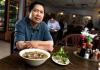
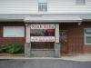

Swatara Township restaurant owner feeds the unemployed
|
 |
The United States welcomed John Pham in 1979 when he was a child and had moved from Vietnam to make a new life. Now Pham, owner of Ninh Kieu restaurant in Swatara Township, wants to return the favor.m. |
I want to give something back to my country and community
|
 |
The United States welcomed John Pham when he moved here from Vietnam in 1979 to make a new life. Now Pham, owner of Ninh Kieu restaurant in Swatara Twp., wants to return the favor. He operated Vietnamese restaurants in Virginia before moving in 2007 to Swatara Twp., where he opened a restaurant at 3116 Parkview Lane. |